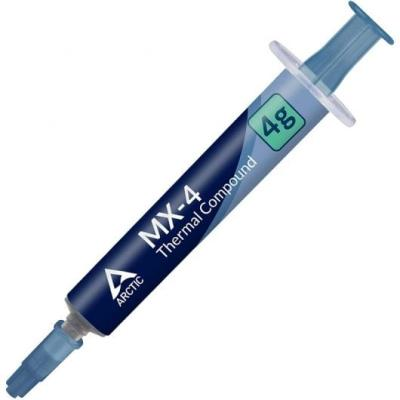

<div id="container-pastaTermica">

      <div class="container my-5">
    <div class="card shadow-lg border-0">
      <div class="card-body p-5">

        <h1 class="mb-4 text-primary">ARCTIC MX-4 - Pasta térmica de alto rendimiento</h1>

        <div class="row align-items-center">
          <!-- Columna del texto -->
          <div class="col-md-8">
            <p class="lead">
              El compuesto térmico ARCTIC MX-4 ofrece un rendimiento excepcional en disipación de calor, fácil aplicación y una durabilidad sobresaliente, siendo la opción preferida por overclockers y entusiastas del hardware.
            </p>

            <a href="https://www.pccomponentes.com/arctic-mx-4-pasta-termica-4-gramos" target="_blank">PCcomponentes</a>
          </div>

          <!-- Columna de la imagen -->
          <div class="col-md-4 text-center">
            
          </div>
        </div>

        <hr>

        <h3 class="text-secondary mb-3">Características</h3>

        <ul class="mb-4">
          <li><strong>Mejor que el metal líquido:</strong> El compuesto ARCTIC MX-4 está compuesto de micropartículas de carbono que conducen a una conductividad térmica extremadamente alta. Garantiza que el calor generado por la CPU o GPU se disipe de manera rápida y eficiente. Excelente en rendimiento, MX-4 es el mejor compañero para overclockers y entusiastas.</li>
          <li><strong>Fácil de aplicar:</strong> Con una consistencia ideal, el MX-4 es muy fácil de usar, incluso para principiantes. Las posibilidades para su aplicación y la manera más efectiva de evitar vacíos entre la CPU y el refrigerador se muestran en el video.</li>
          <li><strong>Aplicación segura:</strong> No contiene partículas metálicas, por lo que la conductividad eléctrica no sería un problema. A diferencia del compuesto de plata y cobre, garantiza que el contacto con cualquier clavija eléctrica no provoque daños de ningún tipo.</li>
          <li><strong>Alta durabilidad:</strong> En contraste con el compuesto térmico de metal y silicio, el rendimiento del MX-4 no se compromete con el tiempo. Una vez aplicado, no es necesario volver a aplicarlo, ya que durará al menos 8 años.</li>
          <li><strong>Valor para el dinero:</strong> Un compuesto térmico de alto rendimiento, perfecto para los constructores de sistemas. No sorprende que el MX-4 supere las expectativas por su bajo precio.</li>
        </ul>

        <hr>

        <h3 class="text-secondary mb-3">Especificaciones técnicas - ARCTIC MX-4</h3>

        <div class="accordion" id="mx4Accordion">

          <!-- Peso y dimensiones -->
          <div class="accordion-item">
            <h2 class="accordion-header" id="headingWeight">
              <button class="accordion-button" type="button" data-bs-toggle="collapse" data-bs-target="#collapseWeight" aria-expanded="true">
                Peso y dimensiones
              </button>
            </h2>
            <div id="collapseWeight" class="accordion-collapse collapse show" data-bs-parent="#mx4Accordion">
              <div class="accordion-body">
                <ul>
                  <li>Peso: 4 g</li>
                </ul>
              </div>
            </div>
          </div>

          <!-- Detalles técnicos -->
          <div class="accordion-item">
            <h2 class="accordion-header" id="headingTechDetails">
              <button class="accordion-button collapsed" type="button" data-bs-toggle="collapse" data-bs-target="#collapseTechDetails">
                Detalles técnicos
              </button>
            </h2>
            <div id="collapseTechDetails" class="accordion-collapse collapse" data-bs-parent="#mx4Accordion">
              <div class="accordion-body">
                <ul>
                  <li>Ingrediente constitutivo: Carbono</li>
                  <li>Conductividad térmica: 8,5 W/m·K</li>
                  <li>Densidad: 2,5 g/cm³</li>
                  <li>Resistividad de volumen: 3.8 × 10 Ω·cm</li>
                  <li>Viscosidad: 870</li>
                  <li>Cantidad: 1</li>
                  <li>No capacitiva: Sí</li>
                  <li>No conductor: Sí</li>
                  <li>Acorde RoHS: Sí</li>
                </ul>
              </div>
            </div>
          </div>

        </div> <!-- Fin acordeón -->

      </div>
    </div>
  </div>

</div>